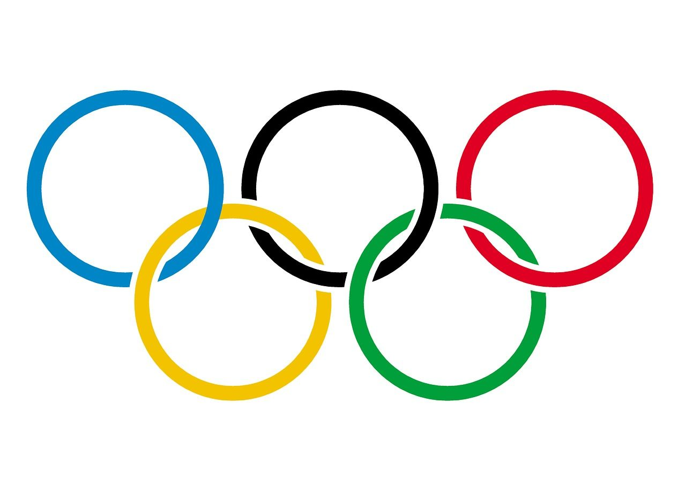
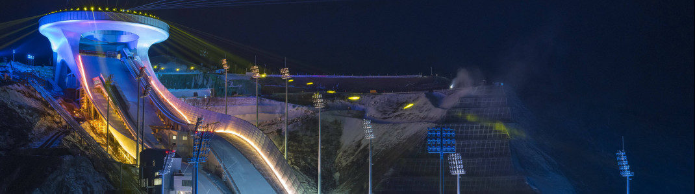
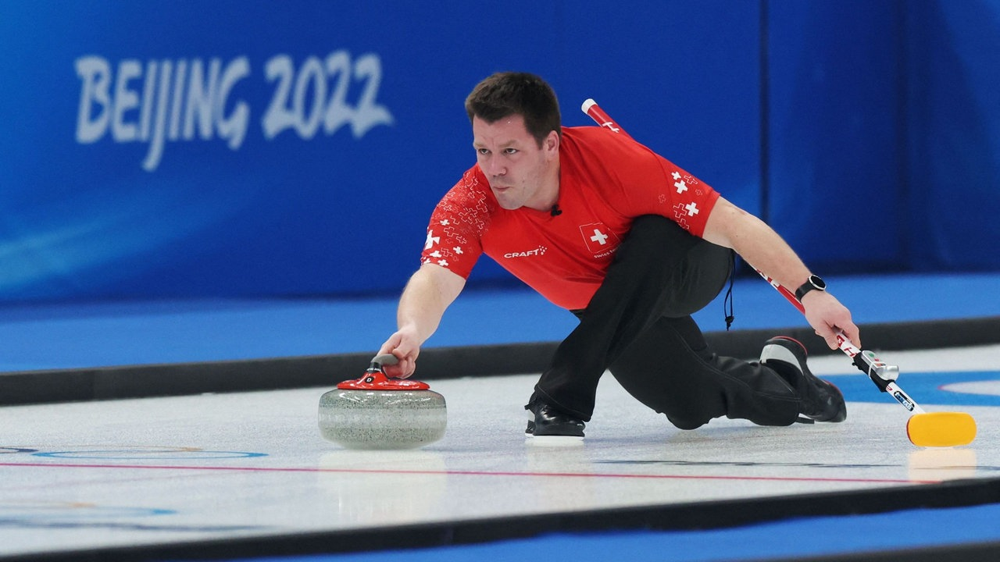
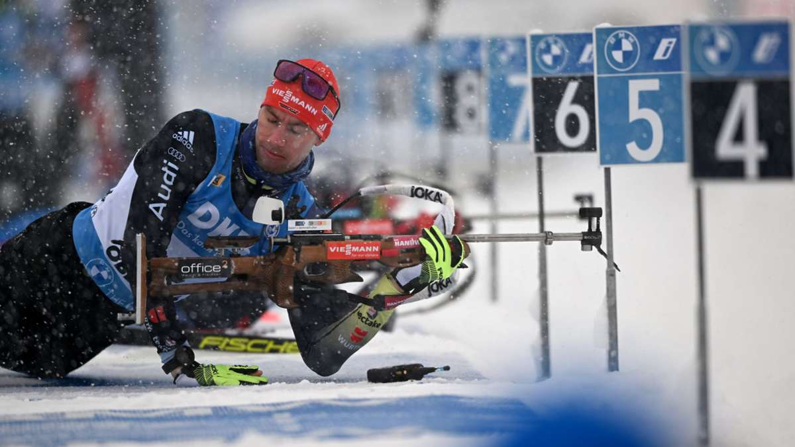

Beijing 2022

Die XXIV. Olympischen Winterspiele wurden vom 4. bis zum 20. Februar 2022 in der chinesischen Hauptstadt Peking ausgetragen. Die Winterspiele fanden damit zum ersten Mal direkt hintereinander (2018, 2022) in zwei fernost-asiatischen Städten statt. Peking war die erste Stadt, die sowohl Olympische Sommerspiele (2008) als auch Olympische Winterspiele ausrichtete.



| Land |
Norwegen |
Deutschland |
China |
USA |
Schweden |
Niederlande |
Östereich |
Schweiz |
| Gold |
16 |
12 |
9 |
8 |
8 |
8 |
7 |
7 |
| Silber |
8 |
10 |
4 |
10 |
5 |
5 |
7 |
2 |
| Bronze |
13 |
5 |
2 |
7 |
5 |
4 |
4 |
5 |